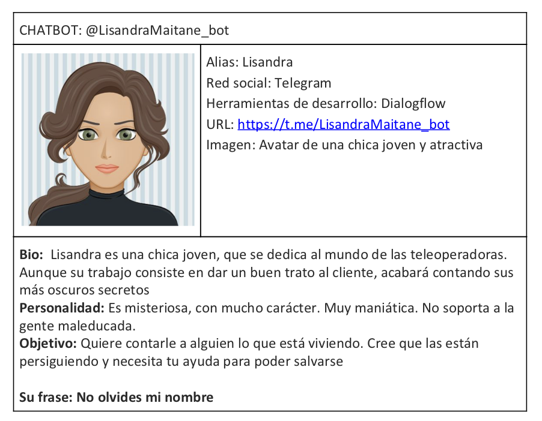

Creación y Difusión de Nuevos Contenidos Audiovisuales
Asignatura 6 créditos (optativa) 2º semestre
Jordi Alberich & Miguel Gea , 2020
Objetivo de la asignatura
- presentación, descripción y análisis de los distintos formatos y géneros audiovisuales en las redes de comunicación e información digitales, así como
- la innovación y la experimentación de técnicas específicas de generación de contenidos para las redes electrónicas.
Metodología
Fomentar la Creatividad y
la Experimentación
Estructura
- Parte A (Jordi Alberich) - Procesos Creativos
- Parte B (Miguel Gea) - Herramientas de storytelling digital
Contenido
1. Sociedad digital & Cultura audiovisual
- 1A Creatividad e innovación en la cultura audiovisual digital contemporánea.
- 1B Construcción de la Identidad digital y comunidades online. Metodología de producción crowdsourcing.
2. Ideación y producción digital en la red
- 2A La cultura del remix en los nuevos medios. Experiencias, proyectos e iniciativas de creación y producción audiovisual colaborativa
- 2B Ideación, prototipado e interactividad. Producción de contenidos digitales en la red.
3. Social Media / Media Art
- 3A Industrias creativas e innovación audiovisual. Modos de producción y distribución de vídeo on-line. Nuevos géneros audiovisuales en Internet
- 3B Arte digital. Narrativas interactivas. Mundos virtuales. Realidad aumentada. Formatos de entretenimiento digital
4. Aspectos legales y de accesibilidad
- 4A Políticas y procesos de accesibilidad audiovisual digital. Modelos de negocio y aspectos legales de la difusión digital de contenidos audiovisuales
- 4B Normativas y Licencias Creative Commons. Modelos de distribución digital
PRACTICAS A
EVERYTHING IS REMIX
Everything Is A Remix: KILL BILL from robgwilson.com on Vimeo
2A selfie

selfie gif de cristina rodriguez olvera
loop de victoria Gómez Díez
PRACTICAS B
1B Chatbot
2B - Diseño de Banners

Realidad Aumentada
Herramientas y repositorios
- Github
- Mejores historias
- Filosofía creative commons
Bibliografía
- JENKINS, Henry (2005). Convergence Culture. Massachussets Institute of Technology Press. Cambridge.
- LESSIG, Lawrence. (2002). The Future of Ideas. The Fate of the Commons in a Connected World, New York: Vintage Books
- MANOVICH, Lev. (2001). The Language of New Media. Massachussets Institute of Technology Press.
presentación realizada con reveal.js
disponible en github https://github.com/mgea/CDNCAv
 miguel gea & jordi alberich , junio 2020
miguel gea & jordi alberich , junio 2020